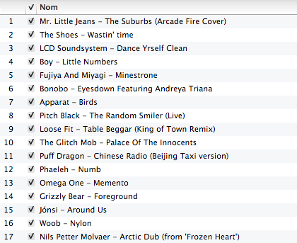

Cooking
Клевая реклама масла или какого-то его заменителя что-ли :)
Клевая реклама масла или какого-то его заменителя что-ли :)


Очень клевое кино. Наверное лучшая роль у Шона Пенна. А посоветуйте с ним чего-нить еще посмотреть? :)

Очень клевая тема. Вот этот вот вид сзади вообще отпад. Интерьерчик тоже вполне себе.
I don’t believe anything really revolutionary has ever been invented by committee… I’m going to give you some advice that might be hard to take. That advice is: Work alone… — Steve Wozniack.
Кстати, об этом же написано в “59 секундах”. Все эти брейнстормы и тп, все фигня, и одиночки эффективнее решают поставленные задачи. Собираться имеет смысл только для того, чтобы получить представление о картине в целом, понять требования, услышать чего хотят или о чем думают люди вокруг. Все остальное происходит где-то вне этого, в другое время и в другом месте.

Выбрал 17 треков из того, что слушал в 11 году. Так и назвал. Весит 200 мегов. Скачать одним архивом можно здесь. Вот.
Охрененская прога, которая умеет по шорткату переключать Fn кнопки между эпл и Fn режимами. Ну и самая круть, что она умеет это делать для конкретного приложения.
I heard a funny thing Somebody said to me “You know that I could be in love with almost everyone; I think that people are the greatest fun.” And I will be alone again tonight my dear
Клип мне не понравился, а вот сам трек отличный.

Бах в исполнении Святослава Рихтера. Онлайн.